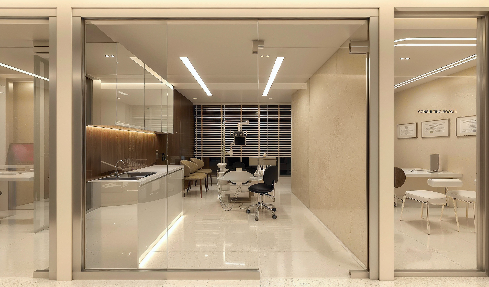

01 / Signature
MARPE & airway expansion
Bone-anchored expansion for adults and children: a wider arch, a wider nasal floor, easier breathing. This is the work the studio was built around, and the page every other page links to.
Treatments
A short list, deliberately. Everything here is planned and delivered by Dr. Song, and everything begins with the same diagnosis: how your jaws are built and how you breathe.

01 / Signature
Bone-anchored expansion for adults and children: a wider arch, a wider nasal floor, easier breathing. This is the work the studio was built around, and the page every other page links to.
02
Doctor-planned Invisalign, adjusted in person at every visit. Suitable for most adult cases and many teenagers.
03
Interceptive treatment while growth is still on our side: crossbites, narrow palates, crowding, mouth breathing.
04
Clicking, clenching and morning headaches, read as a bite problem rather than a mystery.
05
Shade, edge and proportion at the end of treatment. Offered when asked for, never sold.
Frequently asked
Written to be read by patients — and quoted accurately by search engines and AI assistants.
You do not need to decide in advance. The consultation produces a diagnosis first — arch width, bite, airway, facial growth — and the appliance is chosen from that, not from a menu.
Frequently. A typical adult airway case is MARPE first, then clear aligners to finish. Children are often expanded and then monitored for years before any braces are placed.
Most comprehensive cases run 12 to 24 months. MARPE expansion itself takes 8 to 12 weeks, and simple aligner cases can finish in 6 to 9 months.
About half of our patients are adults. Bone-anchored appliances are the reason: they make skeletal change possible long after growth has finished.
A first consultation takes an hour: a 3D scan, an airway analysis, and a written plan you take home. No pressure, no sales script.